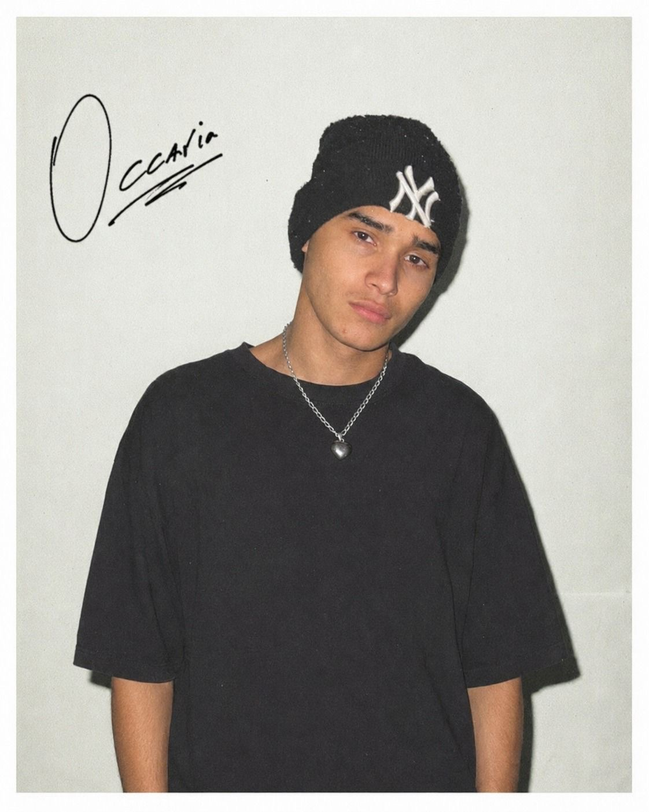
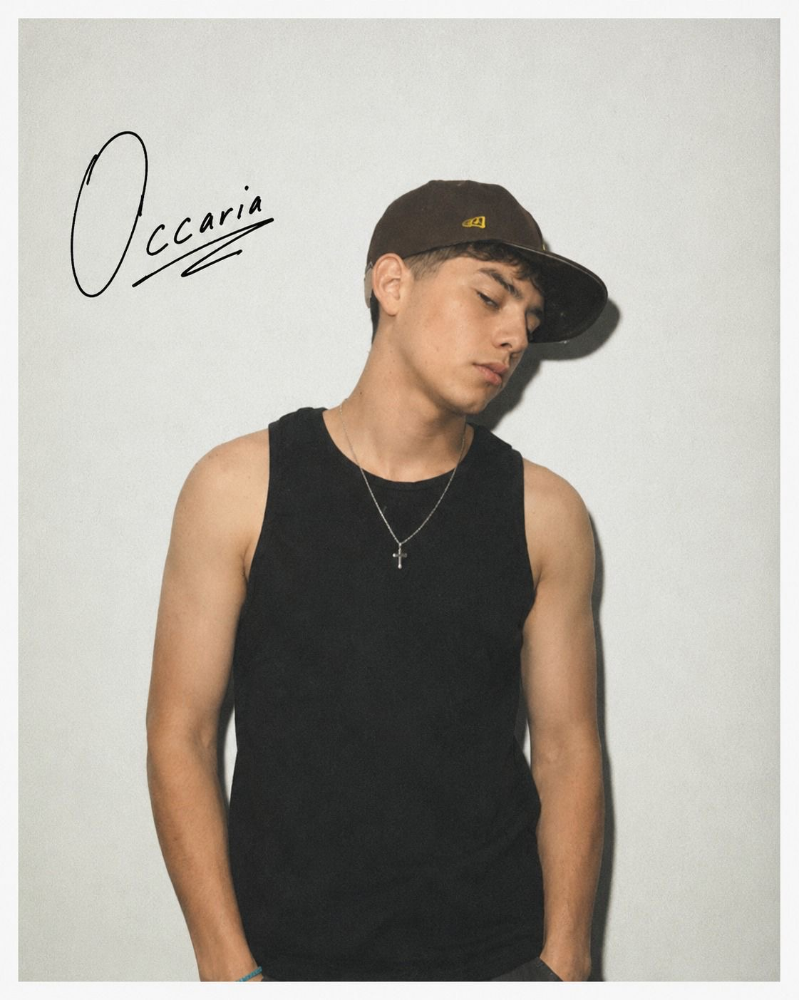
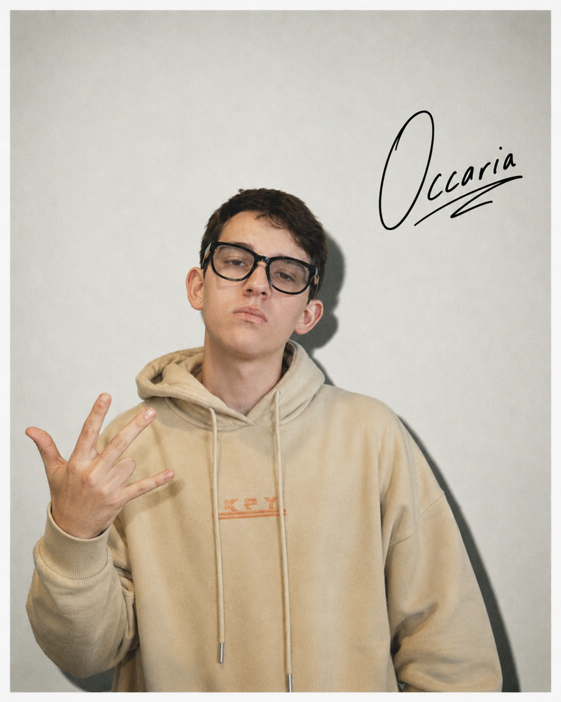
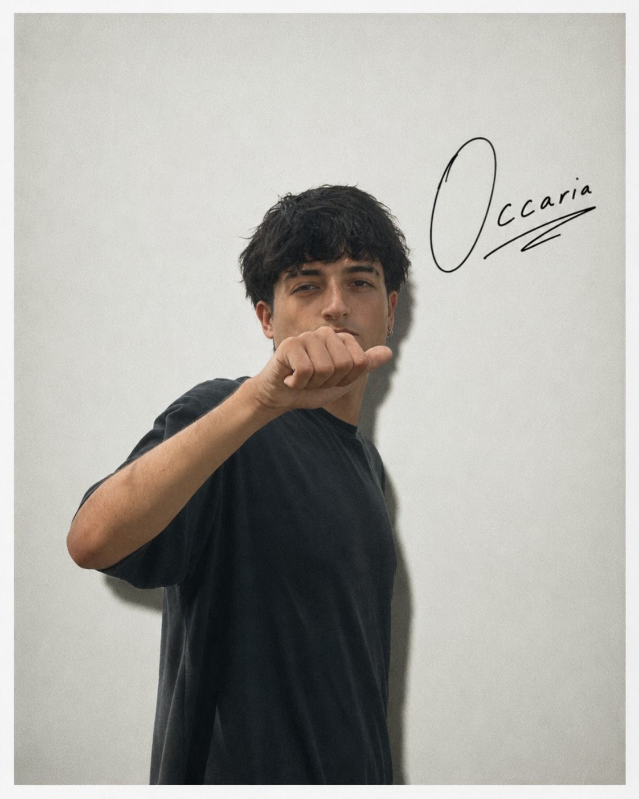
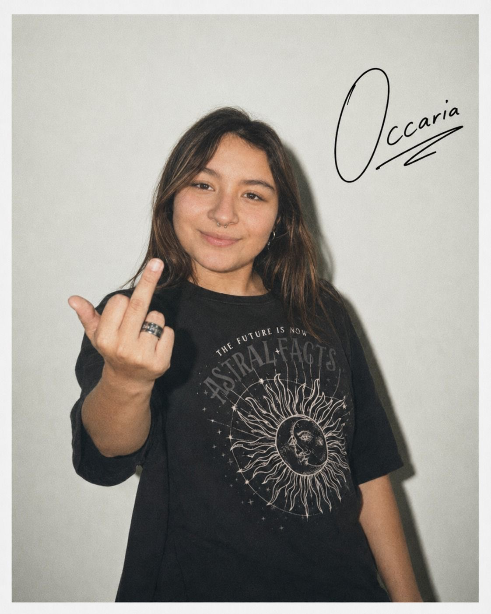
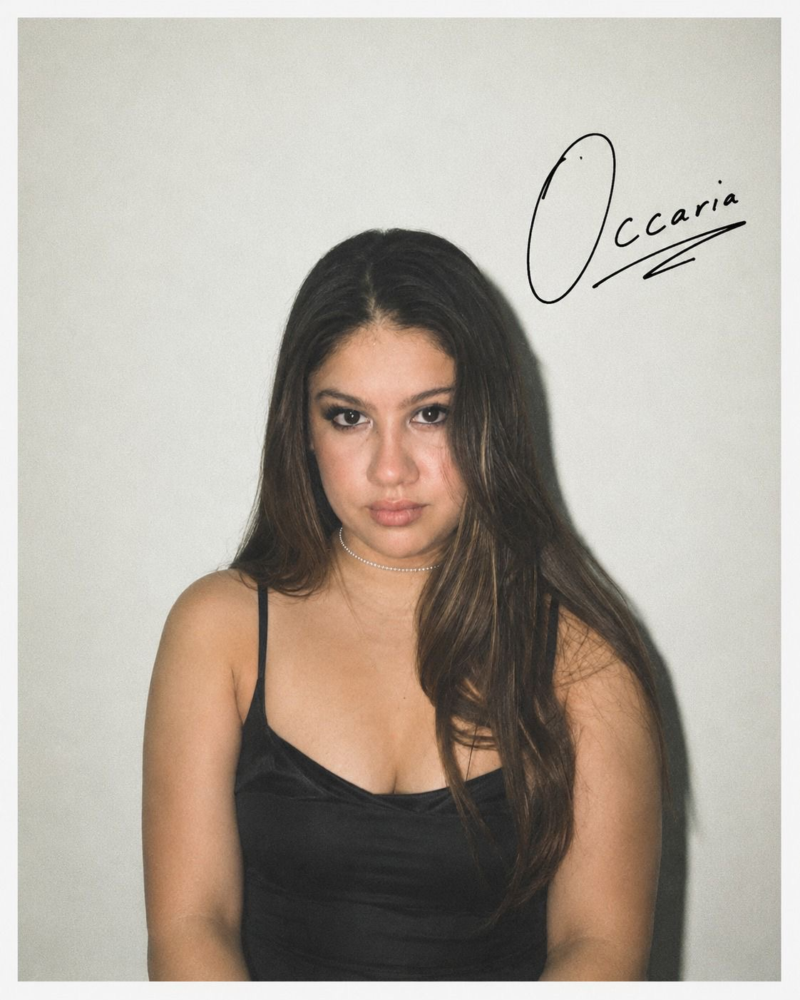

Nuestro grupo






Proyectos
Presentaciones y trabajos realizados durante el año.
Explicamos los sistemas informaticos y su uso en las empresas.
Sistema de automatización del hogar con sensores inteligentes, control por voz y dashboard en tiempo real.
Se explora las funciones que realiza un analista de sistemas y la importancia del mismo.
Explicamos las siete fases para crear y mejorar sistemas de informacion./p>
Contacto